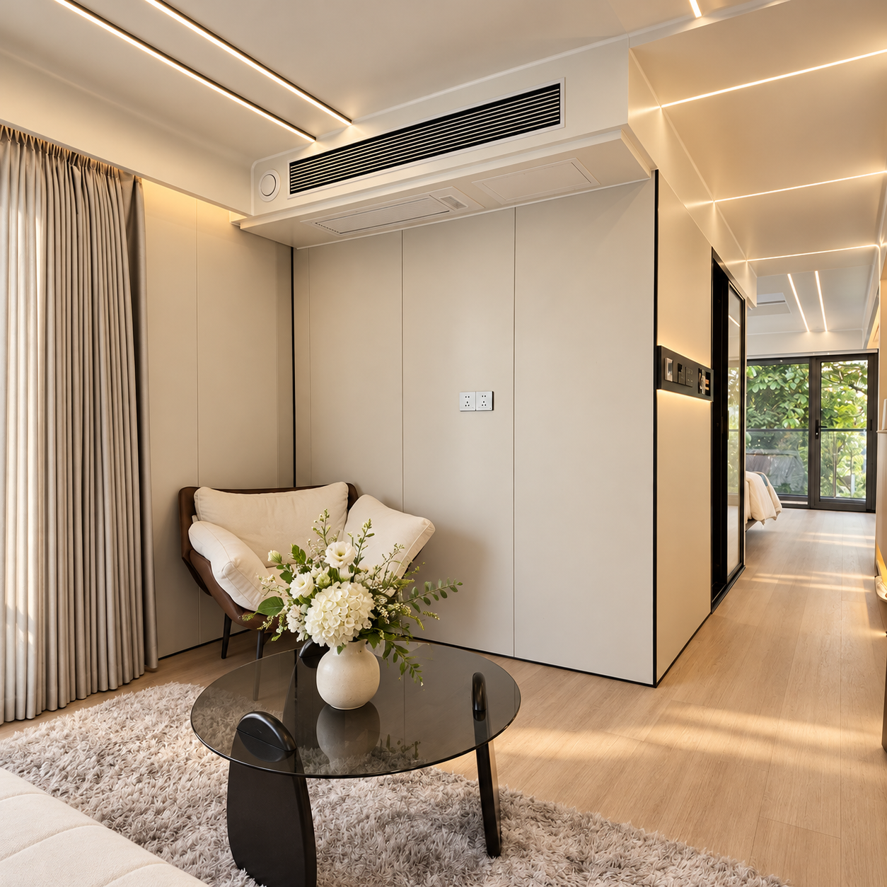
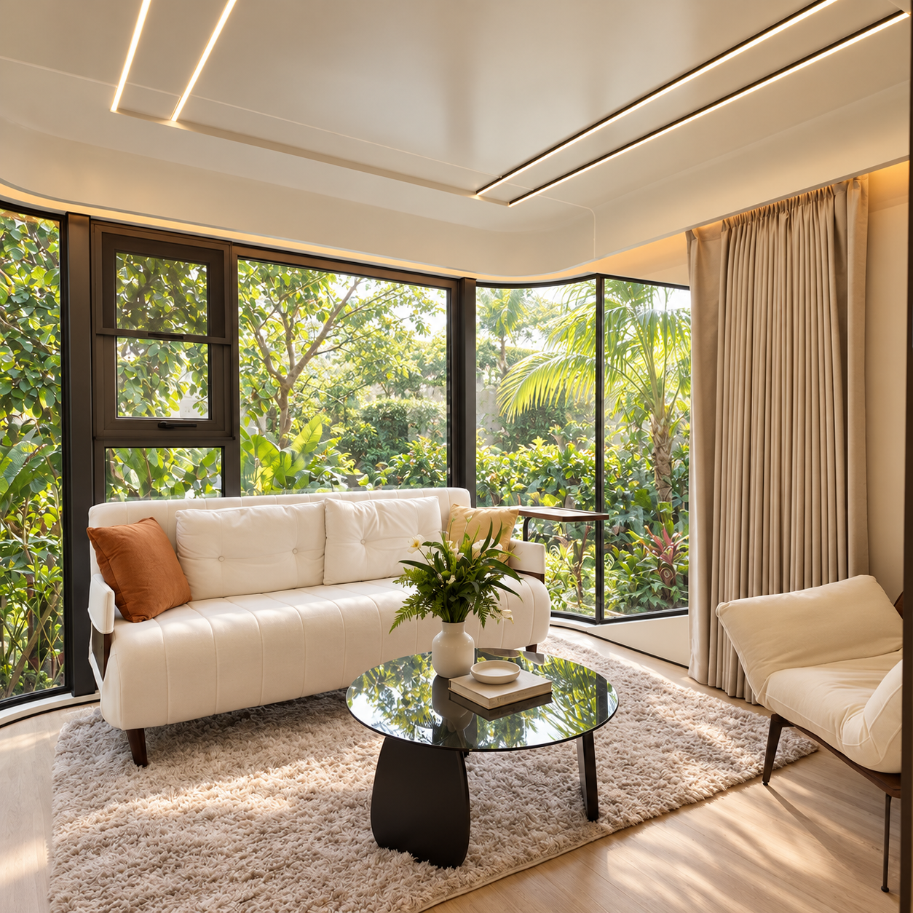
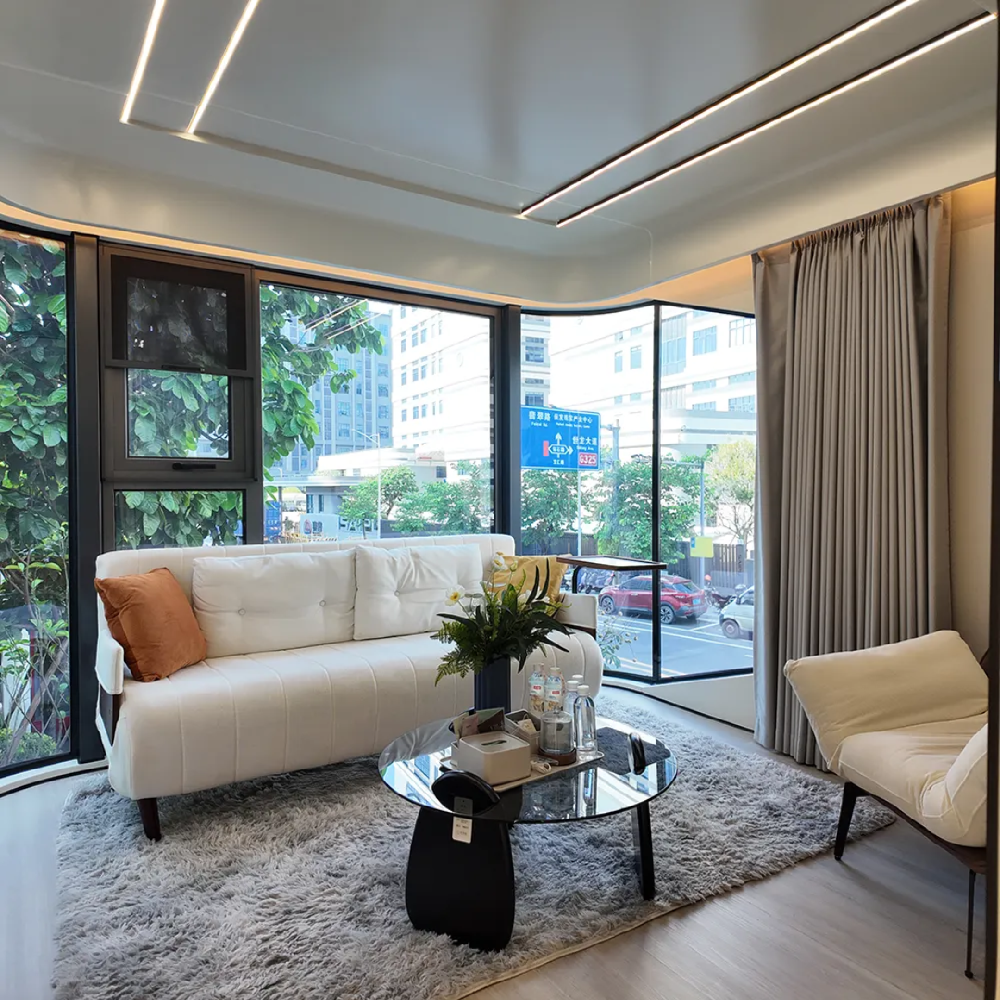
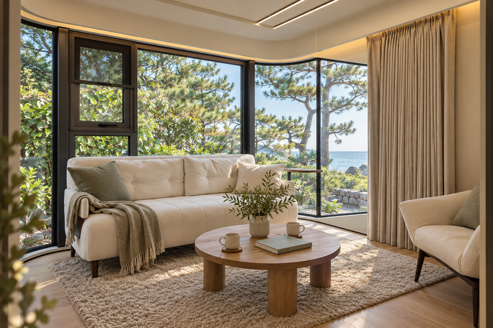
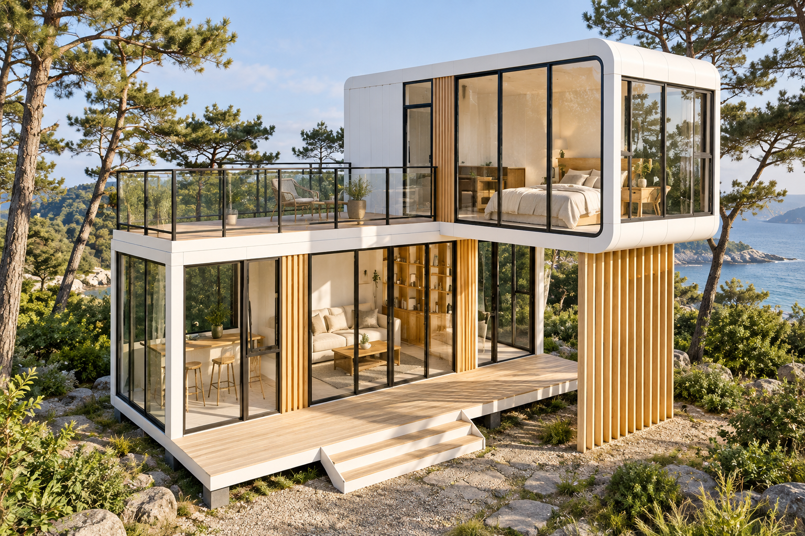
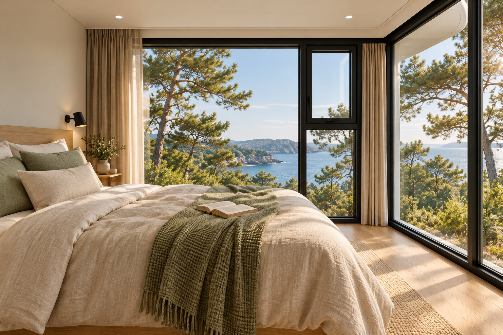
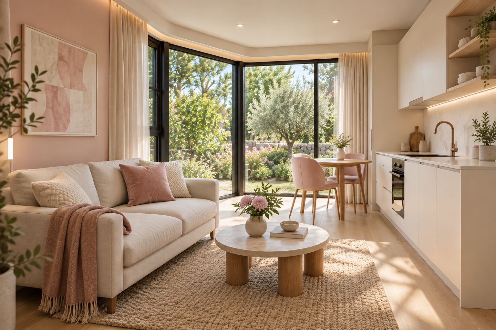
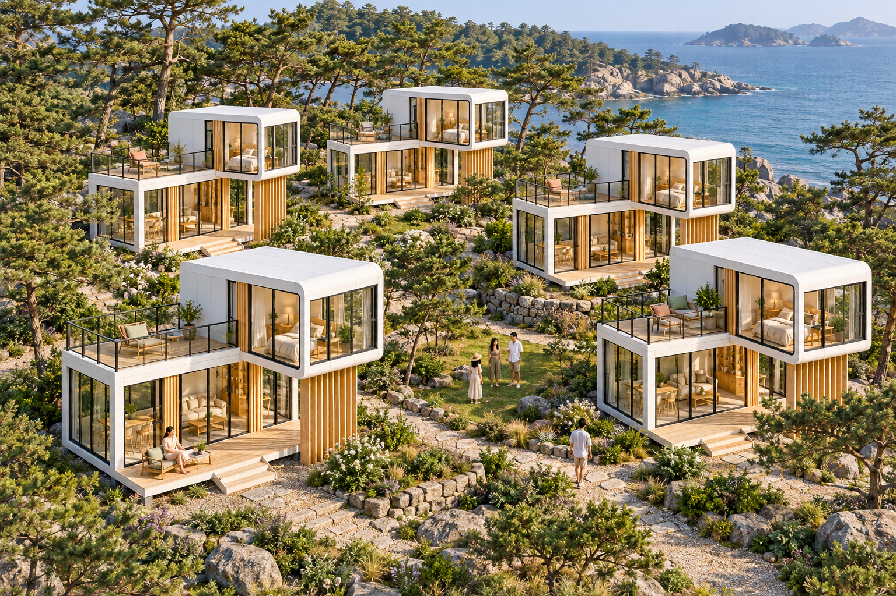
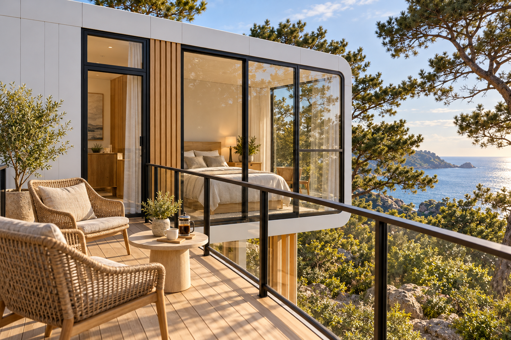
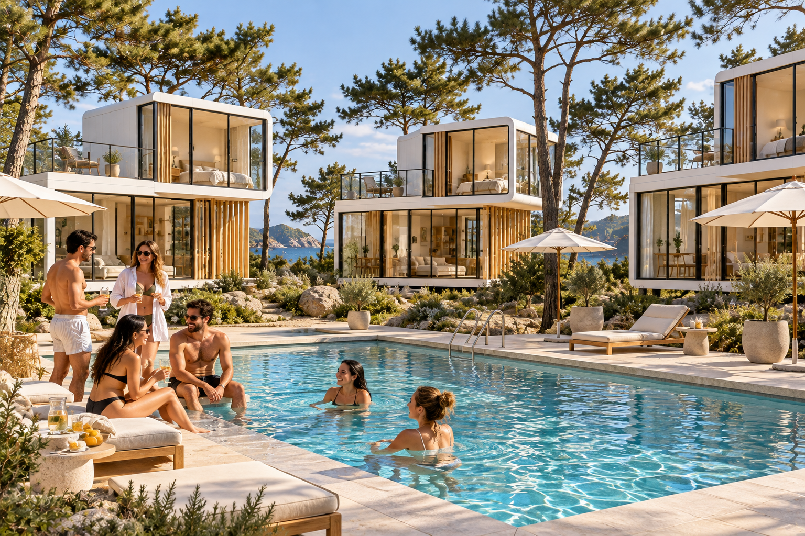

MyLodge
MyLodge MyLodge
MyLodgeMyLodge
 MyLodge
MyLodge
MyLodge
MyLodge MyLodge
MyLodge
MyLodgeTHE ORIGINAL MYLODGE
나만의 쉼과 함께하는 즐거움, 마이롯지
- 혼자 쉬어도, 함께 즐겨도 좋은 공간
- 가족·취미·웰니스로 이어지는 만남
- 휴식과 교류가 어우러지는 별장 라이프
FIND YOUR PEOPLE
나와 닮은 취향을 골라보세요
 MyLodge
MyLodge함께 자라는 가족의 추억
아이와 보내는 느긋한 아침, 온 가족이 모이는 저녁 세대가 함께 즐길 별장 생활을 그려보세요
둘만의 리듬으로 보내는 시간
함께 요리하고 산책하며 바쁜 일상에서 놓쳤던 대화를 이어가세요
좋아하는 일로 가까워지는 사이
취미와 활동이 만남으로 이어지는 휴가 새로운 사람과 함께할 즐거움을 발견해 보세요
좋은 대화가 새로운 가능성으로
편안한 라운지에서 나누는 생각과 경험 일과 만남이 자연스럽게 이어지는 시간을 제안합니다
나를 위한 여백을 채우는 하루
아무것도 서두르지 않는 아침 조용한 공간에서 몸과 마음의 속도를 되찾아 보세요
관심 취향을 살펴보는 화면입니다 커뮤니티 운영과 배정은 상품별로 안내합니다
기존 MyLodge 콘셉트 사진 더 보기
기존 MyLodge 분위기 참고용 AI 콘셉트입니다 신규 태국 빌라·콘도의 실제 상품 사진이 아닙니다

MyLodge
MyLodge
MyLodge
MyLodge MyLodge
MyLodge
MyLodge
MyLodge
MyLodgeMyLodgeMyLodge MyLodge
MyLodge MyLodge
MyLodge MyLodge
MyLodge MyLodge
MyLodgeMyLodge
.png) MyLodge
MyLodgeMyLodge
MyLodgeMyLodge